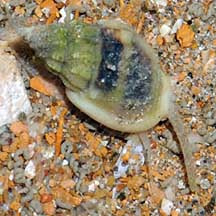
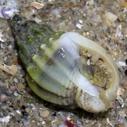
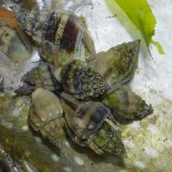

|
|
| shelled snails text index | photo index |
| Phylum Mollusca > Class Gastropoda > Family Nassariidae |
| Mud
whelk Nassarius jacksonianus Family Nassariidae updated Aug 2020 Where seen? A tiny whelk that can be seen busily foraging, especially at night, on muddy and silty sandy areas near seagrasses on our Northern shores. Many sometimes seen gathered together grazing on seaweeds, or on a recently dead sea creature. Features: 1.5-2cm. Small lumpy-looking whelk. Shell thick with bumpy ridges on the spire, the front of the shell often with a broad brown band. Body pale with very long siphon and short tentacles. Operculum thin, pale. |
|
 Tuas, Sep 08 |
 |
 Large numbers cluster on a dead fish. Changi, Jan 07 |
| Whelk food: Whelks are active scavengers and often seen busily foraging in pools at the change of the tides. A choice morsel such as a dead crab or fish is a magnet for these snails which hurry as fast as they can to the feast. |
| Mud whelks on Singapore shores |
On wildsingapore
flickr
|
| Other sightings on Singapore shores |
Links
References
|